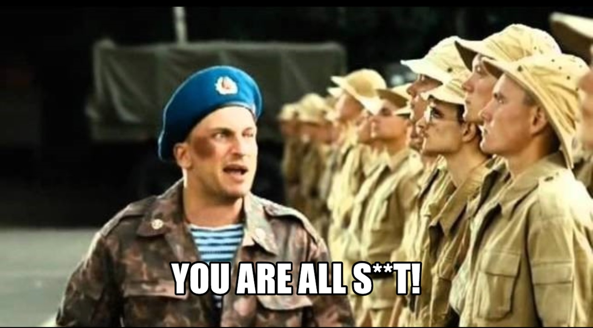
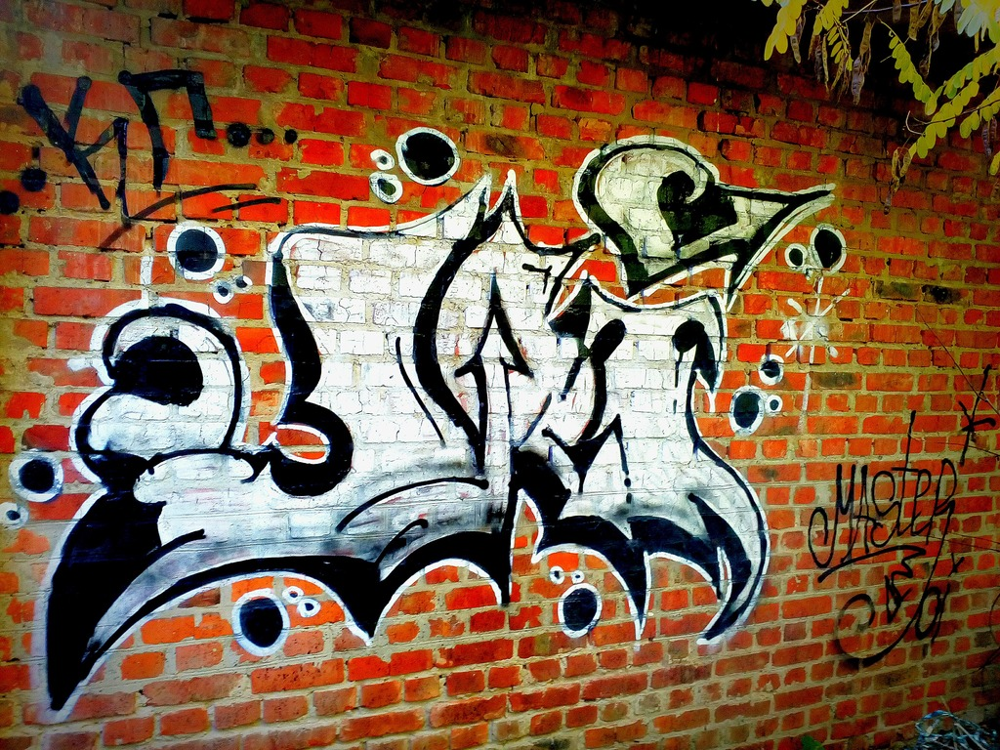
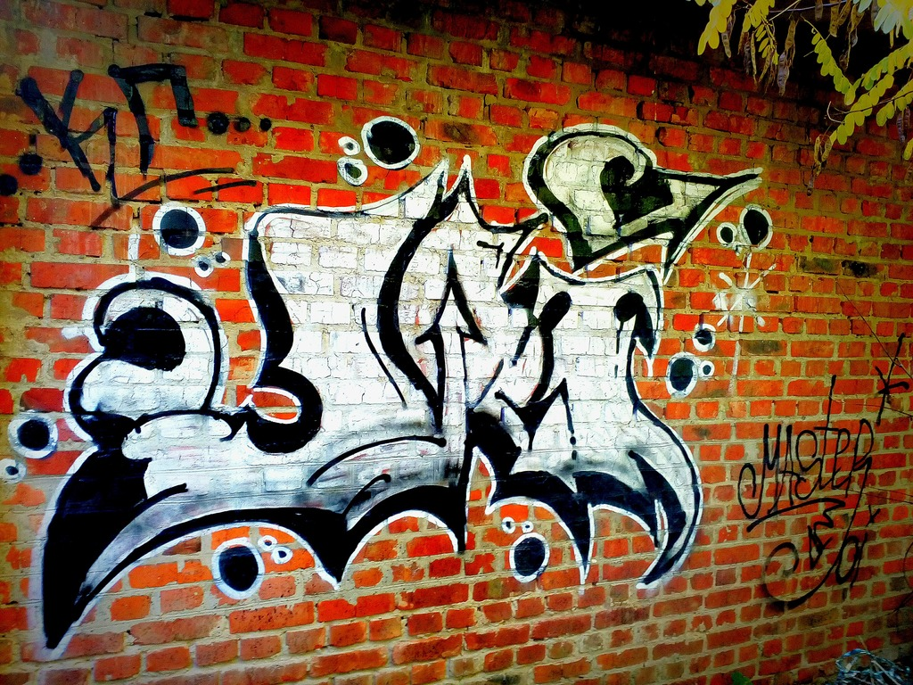

Kyryll Hlum
Résumé
― Hello👋! I`m novice developer and always curious to learn cutting edge technology. A bit enthusiast towards Java development. Majoring in Computer Science from the Kyiv Polytechnic Institute. In my spare time, I like to run, read, listen to music and draw graffity.
“Don't aim at success. The more you aim at it and make it a target, the more you are going to miss it. For success, like happiness, cannot be pursued; it must ensue, and it only does so as the unintended side effect of one's personal dedication to a cause greater than oneself or as the by-product of one's surrender to a person other than oneself. Happiness must happen, and the same holds for success: you have to let it happen by not caring about it.”― Viktor E. Frankl, Man's Search for Meaning
TIMELINE📅
-
May 2021 - September 2021
Took courses on developing web applications in Java-
Well, I spent more than 8 hours a day, 6 days a week on training. A well-structured course of lectures made it possible to fill in knowledge gaps, gain an understanding of some technologies, and the project - to put all this knowledge into practice, gain very valuable teamwork experience and the opportunity to learn from the experience and best practices of the company's existing developers. As a result of the training, my team made a full-fledged post service project similar to Pikabu or Medium. Here is a link to this github: https://github.com/BinaryStudioAcademy/bsa-2021-mindbridge
-
-
September 2019 - now
Cadet in KPI, ISZZI👨✈️-
I am currently studying in the 4rd year of the Institute of Special Communication and Information Protection at the department №5 in the direction of 122 Computer Science. Although programming is not taught properly at the institute, but I believe that with the right desire you can reach the top in any field.
- Passed the course of a young fighter.
- Started practicing Java. Did self-study and discovered a bunch of new tools.
- Spent half a semester in the chummery during a pandemic of Covid-19.
- Actively engaged in sports, for the first time tightened up more than 20 times.
- Finished the 2nd year of the institute with honors.
-
-
September 2018 - July 2019
Student in KPI, ISZZI-
Spent the first year of the institute as a student of KPI
- Like any first-year student began to study everything in a row.
- Was the first in the group to receive an increased scholarship.
- Understood how it is to feel independent of others.
- Got my first job as a loader.
- Became interested in programming, composed several pages on PHP, HTML and CSS for the course assignment.
-
-
Summer 2018
The best summer vacation-
- The first flight!✈
- For the first time spoke live with Turks and Americans.
- Was preparing for the independent external evaluation(ЗНО) on the beach of the Mediterranean Sea🏖
-
- Entering to KPI, the best tech... Ha-Ha... It will be later:D
-
September, 2016 - May 19, 2018
Military Lyceum-
- Similar beginning.

- I began to harden physically and spiritually, although at first it was difficult for me to adapt after school.
- Met many friends and acquaintances. Had the highest success rate.
- Worked as a guide in the traveling exhibition "Memory Block", deployed at the Regional Youth Center of the Chernihiv Regional Council as part of the regional patriotic and educational program called "War, which does not exist!".
- Graduated from the lyceum with two honors in Ukrainian literature and defense of the homeland
- At all good.
- Similar beginning.
-
-
2010-2016
School #12, Pryluki- Moved with my mother to Pryluki, where studied at the secondary school №12.
-
2007-2010
Academy of children's creativity, Mykolaiv- Incredible school. At the time, she seemed almost Hogwarts to me. Lots of interesting activities, such as applied arts, choreography, plant growing, design, etc. And almost every month there were some competitions or festivals in which I actively participated.
-
2004
Big movement- In connection with the change of father's service, moved with my family to Mykolaiv.
-
28th August 2001
PUBLICATIONS📖
-
2021
Yakoviv I.B., Trochymenko A.V., Hlum K.D. Way of determining APT control channel, Іnformation technology and security, 2021. Vol. 9, №1(15), P.37-52. DOI: 10.20535/2411-1031.2021.9.2.249899. - URL: https://its.iszzi.kpi.ua/article/view/249899/. -
2020
Hlum K.D. SELECTION FEATURES OF OBFUSCATORS FOR JAVA ON THE EXAMPLE OF "ZELIX KLASSMASTER". Майбутній науковець – 2020 : матеріали всеукр. наук.-практ. конф. з міжнар. участю 4 груд. 2020 р., м. Сєвєродонецьк. / укладач В. Ю. Тарасов – Сєвєродонецьк : Східноукр. нац.ун-т ім. В. Даля, 2020. – 338 с. -
2019
Hlum K. D. DEVELOPMENT OF CSS LANGUAGE BASED ON CSS GRID LAYOUT TECHNOLOGY. Новітні технології сучасного суспільства (НТСС-2019) : науково-практична конференція(м. Чернігів, 12 грудня 2019 р.) : тези доповідей. – Чернігів : ЧНТУ, 2019. – 238 с.
Languages
Skills
General ITCharacter
Personality type: Logistician
-
Positive traits:
- I am very reliable(if I gave my word, I will keep it).
- I quickly understand what is required of me to achieve the goal (it helps in learning, finding an approach to other people).
- I am happy to help those who ask me (I explain to my classmates what I understood).
- I want to know the essence of the question and learn what I do not yet understand.
- I am focused and patient.
-
Negative traits:
- Sometimes I'm embarrassed to start a conversation first.
- I'm afraid to look out of place or silly.
- Some cases require me a lot of time to resolve, due to excessive caution and uncertainty about the correctness of the result.
- Sometimes I am inattentive.
Likes😃
.-
Some of my works:
 

Dislikes😞
Wants🥺
EDUCATION👨🎓
-
September 2007 – October 2010Academy of children's creativity, Mykolaiv: pupil.
-
December 2010 – May 2016Pryluky comprehensive school of I-III degrees №12: incomplete secondary education.
-
September 2016 – July 2018Chernihiv Lyceum with enhanced military-physical training: full secondary education.
-
December 2018 – till nowBachelor's degree in computer science at Institute of Special Communication and Information Protection of National Technical University of Ukraine "Kyiv Polytechnic Institute"